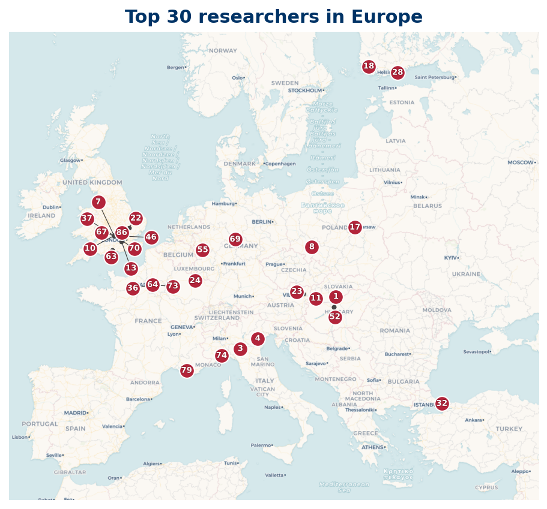

Listing
| Rank | Name | Institution | Country |
|---|---|---|---|
| 1 | Janos Pintz | Alfréd Rényi Institute of Mathematics | HU |
| 3 | Alessandro Zaccagnini | University of Parma | IT |
| 4 | Alessandro Languasco | University of Padua | IT |
| 7 | James Maynard | University of Oxford | GB |
| 8 | Marek Wolf | University of Wrocław | PL |
| 10 | Heath-Brown, D. R. | University of Oxford | GB |
| 11 | Jan Moser | Comenius University Bratislava | SK |
| 13 | Harman, G. | Royal Holloway University of London | GB |
| 17 | Henryk Iwaniec | Polish Academy of Sciences | PL |
| 18 | Kaisa Matomäki | University of Turku | FI |
| 22 | Joni Teräväinen | University of Cambridge | GB |
| 23 | Tim Browning | Institute of Science and Technology Austria | AT |
| 24 | Tenenbaum, Gérald | Institut Élie Cartan de Lorraine | FR |
| 28 | Yoichi Motohashi | Finnish Academy of Science and Letters | FI |
| 32 | Cem Yalcin Yildirim | Boğaziçi University | TR |
| 36 | Fouvry, E. | Centre National de la Recherche Scientifique | FR |
| 37 | Ben Green | University of Oxford | GB |
| 46 | Jori Merikoski | University of Oxford | GB |
| 51 | J. Brüdern | University of Göttingen | DE |
| 52 | Sárközy, A. | Eötvös Loránd University | HU |
| 55 | Kathrin Bringmann | University of Cologne | DE |
| 63 | Clifford Keeble | University of Southampton | GB |
| 64 | Deshouillers, Jean-Marc | Centre National de la Recherche Scientifique | FR |
| 67 | J. P. Keating | University of Oxford | GB |
| 69 | Damaris Schindler | University of Göttingen | DE |
| 70 | Lasse Grimmelt | University of Oxford | GB |
| 73 | H. A. Helfgott | Université Paris Cité | FR |
| 74 | A. Perelli | University of Genoa | IT |
| 79 | Ramaré, Olivier | Château Gombert | FR |
| 86 | D. R. Heath-Brown | University of Oxford | GB |